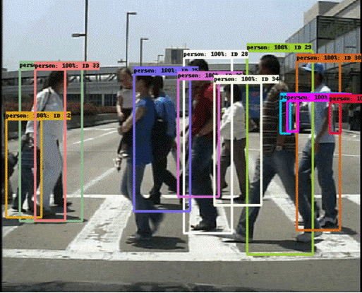

Caleb KanUndergraduate Student @ Imperial College London
Open to SWE Intern / MLE Intern / Research Intern |
 |


Education
|
Imperial College London Bachelor of Engineering - BEng, Computing (Artificial Intelligence and Machine Learning) Grade: First-Class Honours (Predicted) September. 2023 - June. 2026 |
|
Work Experience
|
Department of Computer Science, City University of Hong Kong Research Intern, Supervised by Prof. Jianping Wang Technology: Python, LangChain, OpenAI July. 2023 - August. 2023 [website] |
|
Projects
|  | Multi-Obj-Tracking A Muti-object tracking model based on CenterNet [link] |
Technical Skills
| Languages: Native: English, Madarin, Cantonese |
| Programming Languages: Proficient: C, Haskell, Java, Kotlin, Python, SQL Familiar: HTML/CSS, JavaScript, NoSQL, Solidity, TypeScript |
| Frameworks: FastAPI, Firebase, Flask, LangChain, MongoDB, MySQL, Node.js, PostgreSQL, React.js, SQLite |
| Libraries: Keras, Matplotlib, Numpy, OpenCV, Pandas, SciPy, Scikit-learn, TensorFlow |
| Tools: Android Studio, Atom, BitBucket, CLion, Docker, Fusion 360, Git, GitHub, GitLab, IntelliJ, PyCharm, Visual Studio, Visual Studio Code, Xcode |

© Caleb Kan | Last updated: July 2024